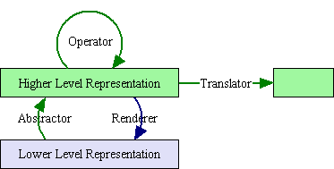
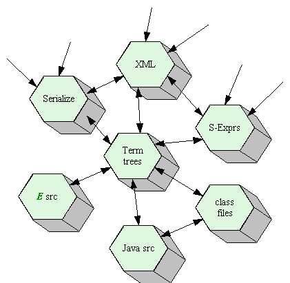

| |
Overview: |
||||||
Our Six Layer Model of Representations
We present here a six layer conceptual framework for handling symbolic data of various kinds, including XML, object serialization, programming language text, E's own Term-tree system, and more. As with the ISO seven layer protocol model, we propose this model as a way to organize the issues, as shown in the table below, in which the representations range from more concrete ones at the bottom to more abstract ones at the top. Each individual data representation system, like XML, will be shown as its own tower. Where possible, these towers will be a subset of the model tower shown below. We will also explain those ways in which a particular representation system does not fit this model. Some representational systems, like relational databases, are so far outside the model that it's not useful to try to shoehorn them in.
| The Six Layers of Representation | |||
|---|---|---|---|
| Abstracting Steps | Rendering Steps | ||
| object graphs eg, an E heap. |
|||
| Loading, Instantiation | Extraction, Traversal | ||
| symbol graphs eg, semantic nets |
|||
| Tangling eg, shortening IDREFs, resolving scopes |
Untangling | ||
| symbol trees eg, Abstract Syntax Trees, S-Expressions, Term Trees, XML DOM tree and infoset |
|||
| Parsing | Flattening eg, pretty printing |
||
| symbol sequences eg, Tokens |
|||
| Lexing | Printing | ||
| char sequences eg, Unicode, surface syntax |
|||
| Decoding eg, UTF8, decompression |
Encoding eg, UTF8, compression |
||
| octet sequences eg, files |
|||
Within each tower, the representation box at each layer stands for the set of all possible things which can be said in the "language" of that representation. For example, the 'char sequences' box in a given layer might represent the set of all possible sequences of Unicode characters. Any particular sequence of Unicode characters would be a member of this set, or a "sentence" of this "language".
A Taxonomy of Transformations
A transformation is a mapping from instances in one representation to instances of another representation. Those transformations that map from lower level to higher level representations with a given tower are abstractors, shown on the left in the above table. The transformations in the opposite direction are renderers, shown on the right in the table.
Not shown in the above table are the transformations that operate within a level. We distinguish two kinds. Transformations within a level within one tower are operators. They map from members of a set to members of the same set, so that one may speak about repeated application, closure properties, and such. Transformations within a level but between towers are translators. They map a sentence said in one language into a corresponding sentence of another language, where these two languages are at a similar conceptual level.
Actual transformations can often be described as compositions of these transformational steps. For example, the front-end of a compiler can be described (approximately) as the composition of a tower of abstractors, reading UTF8 octets into Unicode characters, lexing these into tokens, parsing these into an abstract syntax tree, and resolving scopes and types into a graph representation of the program. Here the upward source-oriented-representation tower stops. The backend of a compiler can be described as the composition of renderers in a separate tower, rendering a flow graph into a sequence of symbolic instructions, which could be rendered into an assembly language, to be assembled into a linkable binary file.
The compiler as a whole is the composition of the the source-oriented tower of abstractors, the translator from the source-oriented-graph to the computation-oriented-graph, and the computation-oriented tower of renderers. Note that even in our idealized story, some levels were skipped: the compiler backend rendered the flow graph into an instruction sequence in one step, without going through a tree representation. Actual compilers also skip the assembly language step, going from symbolic instructions to binary instructions in one step. Sometimes it will be useful to describe such jumps as a composition of smaller steps, and sometimes it won't.
Hub Towers and Spoke Towers
x
Abstracting Steps
The abstracting steps on the left are relations providing upwards transformations, in which data represented at a lower layer is mapped into a representation at a higher layer. When the specification on an abstracting step is deterministic, it forms a function -- a relation in which each acceptable input is mapped to exactly one output. (Note that one can have a deterministic implementation of a non-deterministic specification, but it is the determinism of the specification that matters.) Those lower layer representations that are acceptable as inputs to a given abstracting step are well formed with respect to that abstracting step. The set of well-formed inputs are the domain of the abstraction step. For example, in a tower whose abstracting steps form a C parser, only those character sequences that form a proper C token would be well formed input to a C lexer.
The set higher-layer representations that an abstracting step may produce are the range of the abstracting step. If a given abstracting step may produce any possible representations at a higher level, (if its range is the entire target representation), and if its specification is deterministic, then it is universal with respect to that higher layer representation. The domain of a universal abstracting step forms a language for writing such higher level representations in the lower layer notation -- any higher layer representation is representable at the lower layer. For example, if we define a C language tower's symbol-tree layer as a C specific AST, such that any possible AST configuration correponds to a valid C program, and if all valid C programs can be written, then (ignoring implementation limits like finite memory) a C parser would be universal within that tower.
If a given abstracting step maps only to a subset of the higher level representation, then exactly those higher level representations within this subset are valid with respect to that abstracting step, and we have a validating abstracting step. From an abstracting step one can derive a validity checker that checks whether a given higher level representation is within the range of the abstraction step. For example, if we instead define the symbol-tree layer of our C tower in terms of a more generic AST representation scheme, such as S-Expressions, then only those S-Expressions that a C parser may produce are valid -- only these are abstractions of syntactically correct C program source.
Of course, these transformations compose. For the composition of a C lexer and parser, the well formed character sequences are those that can be lexed into proper tokens, and in which that token stream is itself well formed with respect to the parser, ie, can be parsed according to the language's grammar. Only these character sequences are in the domain of the composite relation.
Concretizing Steps
The concretizing steps on the right are the inverses of the abstracting steps. The inverse of a universal abstracting step is a total concretizing step, and is able to concretize any possible instance of the given higher level representation. When a concretizing step's specification is deterministic, we say it is a canonicalizing function, and that each of its possible outputs is canonical. For example, a deterministic C parser would generally map C programs which differed only in their whitespace to the same AST. A C pretty printer would then print that one AST in some one way. By parsing and pretty printing C programs, we have abstracted away from their whitespace differences, and made two programs that were otherwise identical map to the identical output.
Transformations within a Box
Cross-Tower Transformations
Match-Bind-Substitute Programming
Unless stated otherwise, all text on this page which is either unattributed or by Mark S. Miller is hereby placed in the public domain.
| |
|
report bug (including invalid html)
|
||||||||